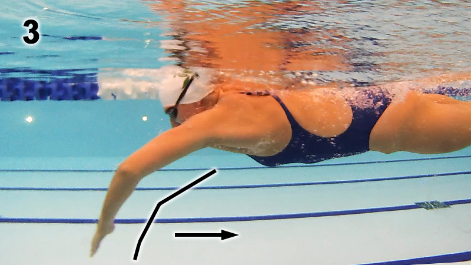

Assume prone position in water and extend arms forward; arms should be just a bit under
surface of water, pointing at destination. One arm then performs a regular freestyle pull,
starting from that extension, through the catch and finish, then it recovers to an
extension, pointing at your destination, back to where it started.
Other arm is still,
just keep it pointing forward. Should feel like you body is very long
or extended, and you may feel pulses or instants of power as you pull, then pulses of
gliding as one arm recovers but the other arm has not yet started pulling.
The swimming arm
catches up
to the arm that is still extended, pointing forward.
< NB!
High Elbow Catch Is Important!
< need to keep shouder up by ear to keep elbow high Stop over-reaching. At a point reaching too far in front of you ends up actually
costing you. If you are reaching and gliding at the beginning of the stroke it
becomes very difficult not to drop the wrist and elbow.
Do not sacrifice a powerful catch for a longer stroke. When we over-glide we naturally
end up dropping our elbow.
https://www.yourswimlog.com/high-elbow-catch/
1. Kick from the hip
2. Plantar flexed feet (Pointing Your Toes) Presents a much lower profile to the water. Not pointing your toes will push water
forwards when you kick, slowing you dramatically.
4. Timing When the hand enters the water at the front of the stroke, the opposite
leg should kick. < ??(see below)
In 2 beat kick this is the only kick, in 4 and 6 beats there are other kicks in between
Scissor kicks - cut them out and you'll go a lot faster. A scissor kick is a very large opening of the legs, normally when a swimmer goes to
take a breath. They hurt you because of the enormous amount of drag they generate
It's a bit like opening up a parachute behind you.
Catch & Pull
http://www.swimsmooth.com/catch.html
Lock on & press the water back behind you. Contrast this to what most swimmers
do - pressing the water down at the front of the stroke rather than back.
Palm looks at bottom of pool, but with finger tips angled slightly down.
This should be flexed from the wrist (not from the knuckles). Need to keep
palm flat and open, fingers closed loosely together.
At full reach and without dropping your elbow, feel like you are tipping your
finger-tips over the front of a barrel (again flexing at the wrist), which
will start the catch.
Initial Catch
At the same time start bending the elbow and pressing back on the water with
the forearm in a near-vertical position.
This is what keeping your elbows high on the catch is all about.
As press water backwards, elbow is bent to 110 deg > perfect leverage to press water
backwards, propelling forwards. Aim for an elbow bend of between 100 and 120 deg.
Many swimmers pull through with a very straight arm which places a lot of load on the
shoulder and produces much less propulsion.
PULL:
high-elbow catch position
Also hand is directly below shoulder as pull through. If you press wide of this or
cross the centre line then you will snake down the pool and waste a lot of energy.
PULL: hand
SUBTLY tip wrist right at front of stroke, just before starting the catch - helps initiate a high-elbow catch position. NB because it helps bring the fingers and hand downwards to
initiate "the catch" (the point at which you start to gain purchase on the water at the
very front of the stroke). Initiation from the wrist brings the hand and forearm downwards
into the classic high elbow catch position. Can now press the water backwards, not
downwards, which is the essence of a great propulsive technique. It is possible to over-do
this action and point the fingertips too far downwards. Do not rush the catch but engage with the water and progressively press it backward, helping
you generate more propulsion for less effort. PULL: wrist
Compare it to walking. When you are walking, as your left leg swings forward your
right arm swings forward as counterbalance. 1 downward kick should
always be timed with the recovery of the opposite arm as it slices in to forward
extension.
Count the kick as it snaps down, not up, as you would if you were running and counting
foot strikes - the foot strike happens immediately after the leg swings forward, not when
it swings back on recovery.
Six-beat kick:
Think of this common kick pattern as being
similar to the timing of a waltz: Count "One-two-three; one-two-three" or
"Right-two-three; left-two-three" and so on. In short, you should complete six
kicks per stroke cycle or three kicks per single arm stroke. The first kick is down,
timed with the opposite recovery arm spearing to forward extension. So, in this pattern,
the right leg kicks down (one) and rotates the torso to the left skating edge, which is
followed by a downward kick on the left side (two). The third beat comes with the right
leg kicking down (three), then the left leg kicks down (one). Next, the torso rotates to
the right skating edge, which is followed by another downward right kick (two) and finally
a downward left kick (three).
The start of the propulsive phase of the arm stroke always coincides with a downward
motion of the leg on the same side.
http://www.enjoy-swimming.com/flutter-kick.html
In the six-beat kick, each leg kicks three times per stroke cycle. Consider the
movements of the right arm and the right leg. The first
downbeat of the leg occurs
during the forward extension of the same arm. The second downbeat of the leg occurs
during the upsweep of the arm. The third downbeat of the leg occurs during
the recovery of the arm. The left leg moves in opposition to the right leg.
In the two-beat kick you kick once with each leg per stroke cycle.
The downbeat of the right leg occurs during the propulsive phase of the right arm
stroke (insweep and upsweep to be precise).
Downward leg kick and the finish of the arm 'push' phase are timed together.
https://swimcoachingblog.com/2013/03/12/frontcrawl-timing-pt-1-arms-and-legs/ http://www.youtube.com/watch?v=VbelgVrdsSk
In the two beat kick the right leg kicks downwards as the right arm
finishes the push phase. In the two beat kick there is a distinctive pause between kicks;
(L)kick-pause-(R)kick-pause. . . and in the six beat kick instead of the pause a swimmer
squeezes in two additional kicks; (L)kick-two quick kicks-(R)kick-two quick kicks.
Elbow/Wrist relation on pull (pinky up):
A low-elbow catch occurs when your elbow drops below your wrist’s level during the pulling phase of your freestyle stroke.
This common fault puts your arms in a poor biomechanical position, preventing you from recruiting the powerful muscles on your back. Result: plod city.
For fast swimming, you need to focus on keeping your elbow high. Here’s how to do it:
Start by extending your leading arm the whole way
With arm outstretched, initiate your pull by rotating your shoulder ‘inwards’ so your baby finger rises above your thumb (imagine you’re pouring a cup from a teapot)
Keeping your forearm, wrist, and hand stiff, begin to point your fingers towards the bottom of the pool
As you pull, repeat shoulder above elbow, elbow above wrist, wrist above hand, hand above fingers
Drawing your arm back, catch the water with your newfound paddle and keep your elbow high until your forearm is at 90deg.
 Windmilling?
Windmilling?
 PULL: hand
PULL: hand PULL: wrist
PULL: wrist May 2018
May 2018